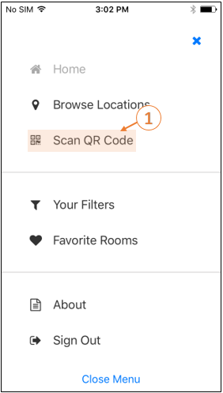

You must first enable this functionality by navigating to the Main Menu on the Mobile App and tapping About.
Navigate to the QR Code Scanner field and ensure that the QR Code Scanner is enabled.

QR Code Scanner Field
When you are ready to scan a QR Code using the EMS Mobile App, navigate to the Main Menu and tap Scan QR Code.

- Book the room immediately (based on availability) using your assigned booking template(s).
- Check in to the meeting (if you are the host).